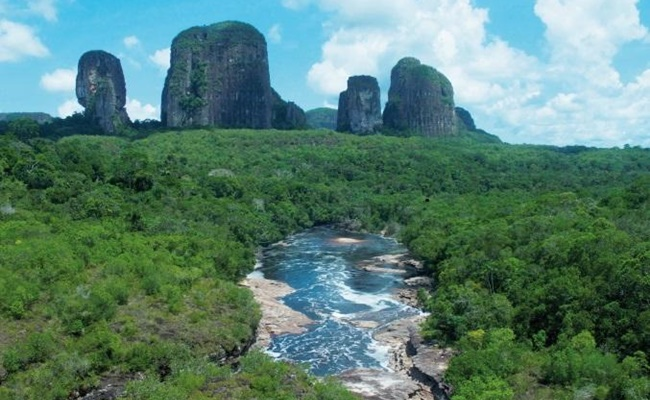
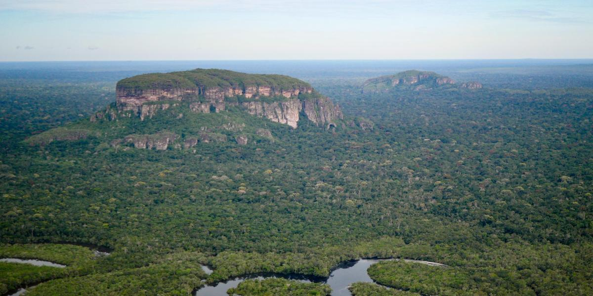
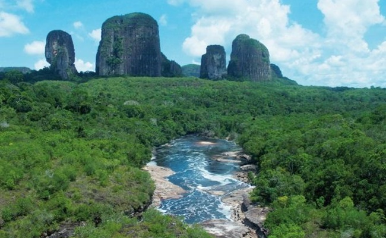
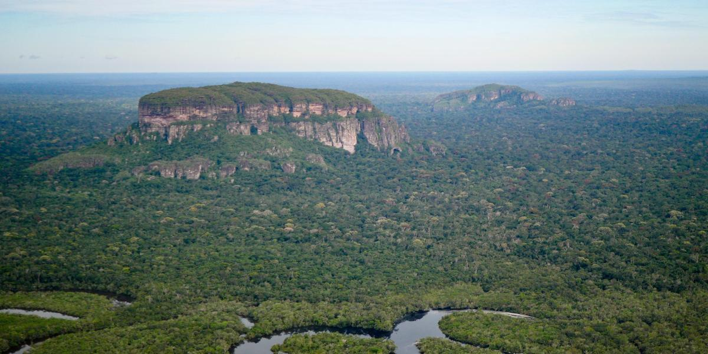

Serranía del Chiribiquete
 



Explora la majestuosa Serranía de Chiribiquete, un paraíso natural declarado Patrimonio de la Humanidad por la UNESCO. Sus imponentes tepuyes y paisajes vírgenes albergan una biodiversidad incomparable y son el hogar de numerosas especies endémicas. La riqueza cultural de las comunidades indígenas que habitan en esta región te invita a conocer su historia y tradiciones. Recorrer sus senderos te llevará a descubrir pinturas rupestres milenarias y una belleza paisajística que te dejará sin aliento. Un destino que une la aventura con el respeto por la naturaleza.